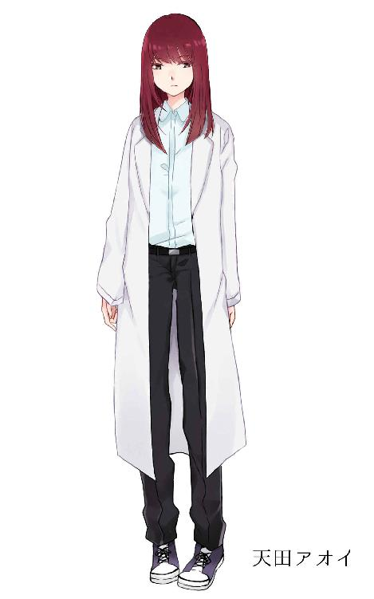

| ドクターアルファのティータイム EP3～DJクッキー～ | |
| 白色黒蛇 | |
| (2018) | |
ドクターアルファのティータイム EP3～DJクッキー～
白色黒蛇
［削除済み］の手記――１
日本の大学なんかじゃ、アタシは無能な論文書きやゴーストライター共に埋もれてしまう。そう理解した時からアタシはずっとこれを考えていた。
アメリカ西海岸、カルフォルニア州。
トランスヒューマニズム研究の最先端を行くことで有名なＫ大学への編入を果たした。
これで心置きなく「生体復元」の研究ができる。
キャバクラでのバイトの貯金だけでは流石に足りずに少しばかり借金を作ることになってしまったが、研究の完成のためならこの程度は仕方ない。
これからの勉強と研究の毎日だ。
本当に楽しみだ。
ＤＪクッキー
俺ちゃんの名前は「ＤＪ Ｃｏｏｋｉｙ（ディージェイクッキー）」
１０代の学生から人気を集めているシンガーソングライター兼ラジオパーソナリティだ。
「......ってぇな訳で次のお便り行ってみよう！
ラジオネーム「きなこもち」さんからのお便り！
『私の友人はクラスでいじめられているのですが、この前メッセージで『死にたい』と相談を受けました。友人を助けたい気持ちはあるのですが私がいじめの標的にされるかと思うと怖くて動けません。どうすればいいでしょうか？』
そっかー、いやでもきなこもちさん偉いよ。助けてあげようって思えるだけ偉いよ。最近のニュース見ているといじめがあっても揉み消しにしたりウヤムヤにしたりとちゃんとしない学校も多いからさ。
しかし「死にたい」かぁ......気持ちは分かるんだよねぇ。でもそういう人にただ「生きろ！」って言ってもあんまり響かないんだよ。だから俺ちゃんはそういう時
「本当に後悔しないなら死ぬのもありだろうけど、きっと後悔すると思うよ？」
って言うね。実際自殺しちゃいけないなんて法律はないから。けれどやっちゃったら絶対後悔すると思うんだ。
俺ちゃん思うに肝心なのはそのいじめられてる子と一緒にいじめに立ち向かうことだと思うんだ。それでね――」
この放送の３日後、いじめを受けていたリスナーの女子中学生が自殺したらしい。そんで何故か知らないけど「自殺を助長した」みたいな濡れ衣を俺ちゃん、は着せられた。当然あっという間に番組も打ち切りにされた。くそったれ、どういうことなんだ⁉
しかもこれが人生最悪の不運なんだと思ったら、もっと不幸なことがこの後起こりやがった。
いじめを受けていた女子中学生の母親が俺ちゃんを殺しに来るなんてよ。
目が覚めた。
気付いたら俺ちゃんは真っ白な部屋の真っ白な布団の中。
辺り一面、白、シロ、しろ。
これ......あの世？
確か俺ちゃん、夜飲み足りなくてコンビニでいつものスパークリングを買いに行ったらその帰りにいじめを受けて自殺した子の母親っぽい女の人に滅多刺しにされたんだよな？
『あんたさえいなければ......うちの子が自殺なんかせずに済んだのに！ 思い知れ！ 思い知れ！ 思い知れぇ！』
......思い知るも何も身に覚えがねぇ。俺ちゃんがいじめたわけじゃないだろ？ 滅多刺しにする相手完全に間違ってやがるよな？ そう思わないか？
それはともかくそんなわけで俺ちゃんはあっけなくおっ死んじまった。
まさかあんな死に方するとはなぁ。死ぬときはパツキンのねーちゃんの豊満な胸の中でゆっくり死にたかったんだけどなぁ......なんて言ったら俺ちゃんの清廉潔白（自称）なパブリックイメージ崩れちまうかな？
そんなことはさておき、このまま寝ていてもしょうがねぇ。俺ちゃんはとりあえずゆっくり体を起こした。
オイなんだこのダサい服は、まるで入院患者だ。いや、入院している方を馬鹿にしている訳じゃない。そこは誤解しないでくれ。ただただ俺ちゃんには似合わないってだけ。
体を起こしてみた感想としてはなんだかなぁ？ あんまり変わんねーな。生きていた頃と。腕は動くし脚は動くし目も耳も問題ない。
「生麦生米生卵ォ！」
口も問題ない。頭とか背中とか触ってみるけどなんかが生えているわけでもない。天使や悪魔っぽい翼くらい生えてりゃ良かったのに。そこらじゅう飛び回ってみたかった。
「起き上がった第一声が早口言葉かい？ キミ、面白いねぇ」
突如、いきなり、飄々としたねーちゃんの声が聞こえた。
うーん......７４点、それなりに俺ちゃん好みの声だ。
っていうか何このねーちゃん。あの世のスタッフ？
「いやいや元気そうじゃないか。キミほど元気な声を出す人はそうそういない。全く良い意味で騒がしい。賑やかなのは嫌いじゃあないよ？」
「へへ、俺ちゃん褒められた？ 照れるなぁ」
あはは、あはははは。
意味わかんないけど、その場のノリでとりあえず笑ってみた。俺ちゃんも、ねーちゃんも。空気と勢いであははと笑ってみたけどそろそろクールダウンのお時間だ。冷静になろう。俺ちゃん大事なことを聞いてない。
「ところでねーちゃん誰？」
「アタシはドクターアルファ。見ての通り研究者さ」
その嬢ちゃんの容姿を簡単に紹介していくぜ。赤い髪のツインテール、裸眼、色白、細身で高身長。年齢は見たところだいたい２０代後半から３０代くらいかな。少し派手に見える顔、超キュート。そんでもってかなり目立つどぎつい赤のハイヒール。そしてかなりミスマッチに思える白衣を着ている。

「けんきゅうしゃ？」
なんだそりゃ。研究者？ 大学とか研究所とかそういう俺ちゃんには縁遠そうな場所にいるイメージ。まさかあの世で出くわすとは思わなかった。いやいや物事一体何が起こるか分かんねぇな。
「そそ、研究者」
つっても、やっぱり違和感。
「ここ......あの世だろ？ 普通こういう時やってくるのってエンマ様とかニョライ様とかじゃねーの？」
「キミのキャラクターで閻魔とか如来とか言うとなんか違和感あるよ」
「俺ちゃん実家お寺だから」
「うそ！？ 本当かい！？ そこまでは調べてなかったなぁ......これは驚いた」
オーバーリアクションで驚くアルファちゃん。けどまぁそんなプライベートなことはさておき......
「でよ、なんであの世の出迎えが研究者なんだよ？」
研究者が死後のお出迎えなんて、聖書にも経典にも俺の友人のシンガーソングライターの歌にも無かった。何がどうなってんのか聞かねぇと。
「生憎だがあの世のお迎えはまだだよＤＪクラッカーくん。ここはあの世じゃない。まだこの世だ」
「Ｗｈｙ！？」
思わず英語になっちまった。こここの世？ あの世じゃなくて？ だとするとお出迎えが研究者なのもなんとなく分かるけどそうなると今度は別の疑問が浮かんでくる。
「けれど俺ちゃん死んだはずじゃねーの？ こう......ナイフで滅多刺しにされたはずなんだけど」
「そりゃあアタシが君を復元させたからね」
「復元？」
「生き返ったってこと」
「Ｗｈｙ！？」
またまた英語になっちまった。本日２度目だ。なんてことだ。
っていうかステイステイステイ。おかしい。いやおかしいってこんなん。
どれくらいおかしいかって言うと牛丼チェーン店がいきなりチーズバーガー売り出すくらいおかしい。
「お、お俺ちゃん......生き返ったの！？」
「そうだよＤＪクラッカーくん、アタシに感謝したまえ」
エッヘンと胸を張るアルファちゃん。張るほどの胸は無いとか言ったらセクハラで訴えられそうだから俺ちゃんはじっと我慢した。
しかし俺ちゃん生き返ったのか......そんなことが出来るって、これが科学の進歩ってやつか？ 俺ちゃん中卒だからよくわかんねーけど勉強できる奴は本当にすげぇな。俺ちゃんチビりそう。
でも待てよ、なんで俺ちゃんなんだ？ 生き返らせるのもタダって訳じゃないだろうし、俺ちゃん生き返らせるくらいならエラい政治家さんやスポーツ選手、同じシンガーソングライターやラジオパーソナリティでも俺ちゃんより有名な奴もいただろうよ。
そうだ。気になるから聞いてみよう。
「なんで俺ちゃんを生き返らせたの？」
「なんか面白そうだったからさ」
わぉ、即答。そしてなんていう単純な理由。
無学で頭悪い俺ちゃんにもよく理解できる超絶シンプルイズベストな回答だ。ありがとう。愛してる......じゃなくって。
なんだ？ その「ふらりと近所の本屋寄ったら面白そうな漫画を見かけたから」みたいな理由。そんな最先端の科学技術を個人の興味本位で使っていいのか？なんていうかこの嬢ちゃん只者じゃねぇな。色んな意味で。
「まぁとりあえずお茶にしようよＤＪクラッカーくん、紅茶によく合うお菓子を買っておいたんだ」
紅茶......ね。
俺ちゃん、よくコーヒー派だと思われるが紅茶の方が好きだ。何て言うか......コーヒーより飲みやすいだろ？ つっても、正直お茶やコーヒーよりガツンとした炭酸飲料の方が好きなんだけどそれと比べるのもなんか違う気がするから黙っておく。
そしてそれより俺ちゃんどうしても言わなければならないことがあるんだよな。うん。これは絶対言わないといけない。マストだ。
「俺ちゃん、ＤＪ「クッキー」だから。スペルは「Ｃｏｏｋｉｙ」な。「クラッカー」じゃねぇよ？」
「クッキー」
特別説明はいらないかもしれないが語らせて欲しい。クッキーの語源は北米で使われる小さなケーキを意味する中世オランダ語の「koekje」が北米にて英語に派生したものだ。英語圏では一般的にビスケットと呼ばれる。クッキー、ビスケットは国や地域や言語により混同されていたり異なるものであったりと定義はまちまちである。ちなみにフランスでは「プチフール」ドイツでは「ゲベック」など、クッキーの同類は諸国に存在する。
クッキーの元祖は７世紀のペルシャ。砂糖の使用がその地域で浸透した直後に生まれた。バターと砂糖のクリームを加えた現代の最もポピュラーなクッキーは、１８世紀に一般的なものとなった。
「今日用意したのは「永琳洋菓子堂」って店のチョコチップクッキーだ。３０年やっている歴史ある洋菓子店の老舗でね。通販とかやってないし朝一番で並んでも売り切れることもあるそうだから買いに行くときは相当気合を入れたよ」
アルファちゃんは更に盛られた美味しそうな色のチョコチップクッキーを前にうんちくと苦労話を延々語る。このＤＪクッキーを前にクッキーを出してきた。ってことはさっきの名前の間違いはわざとか？
本当に微妙なジョークだ。駆け出しの若手芸人もそんな真似はしないだろうよ。
というかアルファちゃん、お菓子のこととなると俺ちゃんよりもお喋りちゃんになっちゃうのね。
「ささ、アッサムティーと一緒につまむと良い。クッキーが甘いから砂糖やミルクは入れずにストレートで頂くことをお勧めしよう。もちろん欲しければ用意するけどね」
俺ちゃんのぶんのシャレオツなティーカップに紅い紅茶を淹れて俺ちゃんに手渡した。じんわり掌を優しく焼くような温みを感じる。
なんだかなぁ......俺ちゃん、こういう女子力高めのお茶会みたいなの初参戦だからちょっとどう振舞ったら良いか分かんない。
いや何も女性慣れしてないって訳じゃない。デビューするちょっと前は合コンなんて日常茶飯事だったし、公になっていたらスキャンダルで週刊誌の獲物になっていただろう女とのあれこれもあった。経験は豊富な部類に入ると思う。けれどこういうどこか気品を感じさせるような、ベルサイユ？ フランス貴族のお茶会みたいなのは未経験、場違いだと思えてならない。
ゲストである俺ちゃんがアウェー感を覚えてる。まるでダメな番組企画だ。俺ちゃんなら企画書書いた奴に今すぐ書き直しを指示する。
「どうしたんだい？ 食欲がないかい？」
「そ、そういうわけじゃねぇんだけどなぁ......」
「なぁに、そんなかしこまらなくっても良いさ。ＤＪクッキーらしくもない。行儀や礼節なんてつまらないことは考えずに召し上がってくれたまえ」
アルファちゃんは一体俺ちゃんにどんなイメージを抱いてんだ？ イマイチよくわかんねぇ。
「お、おぅ......」
固まっていても仕方ねぇ。俺ちゃんはとりあえず皿に盛られた半径３センチくらいの丸いチョコチップクッキーをつまんで口に入れた。
ポリ、ポリポリ、ポリポリポリ。
おう、旨い。
硬めの歯ごたえにところどころチョコチップの少しだけしっとりとした触感がある。バターの独特の風味、チョコのしっかりとした甘さが口内を支配するかのようだ。
続けてまだ熱い紅茶を喉に流し込む。チョコチップクッキーによって奪い取られた口の中の水分が熱とともに補充される。飲み込むと胸の中央がじんわり温まるのを感じた。なるほど良いコンビだ。ベストマッチって奴だろう。
......なんて俺ちゃんらしくも無いがチョコチップクッキーと紅茶の食レポをつらつらと並べる。
ＤＪクッキーがクッキーの食レポ。ほら、ディレクターとっとと書き直して。
そういえば......食レポの仕事はやったことが無かったなぁ。
クッキーをぽりぽり食いながら紅茶をちょびちょび口にする。
かつてのバンドメンバーが見たらきっとひっくり返って困惑するだろう。
「ふふふ、慣れないかい？ こういうティータイムは」
どうやらアルファちゃんはお見通しらしい。
俺ちゃんたちの場合。コンビニの１００円コーヒーを１人１杯ずつ用意してギターやらベースやらキーボードやらを持ち出し、即興で演奏するちょいと騒がしいものだった。
「なんだか新鮮だ。これはこれで悪くないと思うな」
慣れない。というとなんだかマイナスなイメージを持たれてしまう。しかし言葉の言い回し次第でいくらでもイメージは覆せることを俺ちゃんは知っている。ラジオパーソナリティやって思い知ったことだ。
「前向きなコメントだね」
「それが取り柄だしな」
で、それでだ。
「本当に俺ちゃん。「面白そうだから」生き返ったの？」
なんか別の理由がある気がする。そう思うのは当たり前だろ？
「生き返りとはややニュアンスが違う。厳密に言うと「復元」させたんだ」
「その辺は俺ちゃんバカだからなーんも分かんねーけどよ。復元？ だっけ？それをやった理由は他になんか、あったんじゃねーの？」
「思いのほか細かいことを気にするね」
そりゃなぁ。だって「あなたは面白半分で生き返りました」なんて誰がどう考えても「嘘こけ！？」ってなるだろ。それを鵜呑みで信じることが出来るほど俺ちゃん頭おかしくない。細かいも何も疑うのは普通じゃんか。
「まー本物のラジオＤＪとサシでお話をしてみたいって風には前々から思っていてね、そんな時都合よく３か月前にキミが殺されたってニュースを見たもんだから「チャンス！」って思ってさ」
おいおいおいおい、なんだ「好都合」って。縁起でもねぇし俺ちゃんからすれば冗談でもなかったんだぜ？ それにチャンスって......随分とえげつねぇことを口にするなぁアルファちゃん。
「好都合って物言いは傷つくなぁ。俺ちゃんなんで殺されたかさえイマイチ納得できてねーんだぜ？ 訳も分からず滅多刺しにされたんだ。ちょっとくらい慰めてくれよ」
「ははは、それは災難だったね」
だから笑い事じゃあねぇってばよ。その間違いなく感情のこもってない同情は逆に虚しくなるぜ。
「けどさ、普通に分からないかい？ キミが何で殺されたか」
俺ちゃんは何も悪くない。だから何で殺されたかがさっぱりわかんない。
ラジオ放送でのコメントが問題になったことさえ正直納得いってねぇ。
『本当に後悔しないなら死ぬのもありだろうけど、きっと後悔すると思うよ？』
なんだか知らねぇがいつのまにか
『本当に後悔しないなら死ぬのもありだろう』
ってコメントしたと報じられていた。訳わかんねぇ。なんで後半から省略されてんだよ。おかげで俺ちゃんが自殺を助長するコメントをしたと伝えられた。全くいい迷惑だ。メディアってのは本当にロクなことをしねぇよな。まぁ俺ちゃんもそのメディアのおかげで飯食ってきたわけだからここはあまり大声で文句言えないけど。
というかよ。俺ちゃんは結構この手のコメントは何度もしてきたはずだぜ。
受験勉強に伸び悩む受験生に対しては
『本当にそれが必要か考えてみろよ。社会に出たら勉強なんてなんも役立たねぇぜ？ やりたいこと見つけてそれにガチで取り組む方が絶対良いって』
と学生に勉強放棄を勧めた。
学校がつまらないと口にする学生に
『別に無理して行くことねーよ、俺ちゃんだって中学の頃は出席日数ギリギリだったぜ？ 学校サボってよく家でベース弾いてた』
と不登校を推奨した。
親との関係性に悩む女の子に対して
『親と仲良くできないと思ったら家を出ることを考えてみても良いんじゃねぇか？ 爺ちゃん婆ちゃんの家に行くとか、友達と同棲するとかも良いじゃん。結局親も他人なんだからよ。仲良くできねー親とはぜってー上手くいかねぇんだ。だったら早く親元を去ってとっとと関係絶つのも良いだろ？』
と家出と親との関係断絶を助長した。
ハッキリ言って俺ちゃんのコメントの中から反道徳的なものをピックアップしたらキリねぇと思う。そういうアウトローなとこも含めて俺ちゃんのラジオはそこそこ人気で話題になっていた。だからあのコメントが問題になったってこと自体なんつーか「今さらか？」って思ったんだ。
俺ちゃんの人生、勉強はしなかった。ロクに学校にも行かなかった。高校受験なんて想像したことも無かった。親との会話は徹底的に避けてきた。それでも俺ちゃんは自分の好きなことを見つけてそれにガチでのめり込んだ。
それで今までやってきたしやってこれた。運が良かったってのもあるんだろうけど、それでも俺ちゃんは俺ちゃんなりにちゃんと生きていけたんだ。
だから俺ちゃんのラジオ番組『DJ Cookiy night school』では徹底的に
『自分の在り方をつまらない周りの流れなんかで全部決めんじゃねーぞ』
ってことを伝え続けてきた。
それの何がいけねぇんだ？ それの何が悪いんだ？
そしてなんで俺ちゃんが死ななきゃなんねぇんだ？
俺ちゃんさっぱりわかんねぇ。全くもってわかんねぇ。
「ふむふむ、なるほどねぇ」
アルファちゃんはうんうんと頷きながら俺ちゃんのアレコレを聞いてくれていた。
......ＯＨ！？ 俺ちゃん気付いたらこんなに長々と自分語りを続けてたってのか？ しまったな。やっちまった。これじゃまるでうざい奴じゃん。立場が逆だったら間違いなく嫌いになるタイプだ。絶対モテないわこりゃ。
「なんだか一方的にバシバシ喋っちゃってごめんなアルファちゃん」
なんでとりあえずアルファちゃんに謝っておく。悪いと思うようなことをしたら謝る。これ常識。
「いやいや、いろいろと面白かったよ。いろいろと分かったし」
アルファちゃんはそう笑って許してくれた。
そっか、そういうことならまぁ良かったってことにすっか......って、ありゃ？
『いろいろと分かった』だって？
「アルファちゃん、何が分かったっての？」
「なんでキミが殺されたか、キミ自身が全然理解出来ていない理由がよくわかったよ」
ＷＨＹ！？ マジか、すげぇじゃん。それ超聞きてぇ。未来からタイムスリップしてきた未来人の予言よりも気になる話だ。
「すげぇなアルファちゃん。マジ尊敬するぜ」
『凄いな君は、心から尊敬するよ』
するとアルファちゃんはまるで美術館に飾られた美女の絵画みたいに笑顔を固めた。ありゃりゃ？ どうしたってんだ？
「あ、アルファちゃーん？ もしもーし！？ なんかあった？」
「ん？ あぁいやいや。ちょっとボーっとしちゃってね。すまないすまない」
お、おう......正直釈然としないところがあるけど気にしないでおこうか。妙な詮索をするのは野暮ってもんだし。俺ちゃんそういうとこ紳士だから。
「で、俺ちゃんは何で殺されたの？」
どちらかというとこっちを聞きたいし。なんで俺ちゃんが殺されたかを尋ねた。
その返答は......あっさり、さっぱり、すげぇ単純なものだった。
「勉強不足だったから」
勉強？ 不足？ べんきょう？ ぶそく？ ベンキョウ？ ブソク？
そのまんま勉強が足りていないって意味。つまり馬鹿だからって訳らしい。
そりゃ俺ちゃんが馬鹿なのはよく自覚してるぜ。けど、だからって殺されるほどか？ 馬鹿だから殺されるってんなら俺ちゃんの友達のほとんどは皆夜道で滅多刺しにされるじゃん。まるで世紀末。核戦争でも起きたのかと疑っちまう。
「キミがちゃんと勉強してればキミは殺されることは無かったと思うよ？」
「まぁー......俺ちゃんが勉強してたらきっとラジオパーソナリティとかになる人生は送ってなかったろうけどよ。直接殺された理由ってなると違くねぇか？」
アルファちゃんは首を振る。
「違くない違くない。だってキミ、殺意や敵意を向けるには格好の的になっているんだもん。仕方ないじゃないか。勉強不足だから「憎まれやすいポジション」「悪人にされやすいポジション」のそれそのままになっていることが分からなかったんだろう」
......憎まれやすいポジション？ 悪人にされやすいポジション？
どういうことだと斜め４５度くらい俺ちゃんは首を傾げた。
アルファちゃんは続ける。
「いじめを受けていた子が自殺した時、学校に調査をするよう求めたって学校側は自分の不手際だと思われたくないからあまりちゃんとした調査はしない。 教育委員会がやったって同じこと、事実はどうしてもはぐらかされがち。挙句ＰＴＡとかＯＢＯＧとかが絡むとまた面倒なことになる。そうやって何か月も何か月も揉めて争っても誰かが罰せられるとは限らないし、世間はいじめで自殺した子のことなんて忘れていく。どんなに恨めしくとも学校を恨んでも仕方ない。そんな時、自殺した子が聞いていたラジオで
『本当に後悔しないなら死ぬのもありだろうけど』
なんてことを公共の電波で流した奴がいたとしたらどうだろう？
そいつを恨んだ方が楽じゃないかな？
そいつを悪人にして吊し上げた方が良いと思われないかな？
そいつを殺した方が簡単に復讐にならないかな？
直接いじめたであろう顔も規模もあまりよく分からない奴よりも、直接いじめた訳じゃなくとも自殺を助長したっぽいことを言った顔も声もはっきりしているキミを恨んで復讐した方がずーっとずーっと楽になってしまう。そういうことがキミは最後まで分からなかった」
「でも、俺ちゃんを殺しても何の解決にもならねぇじゃんか」
「あぁ、そうだ。何も解決しない。けど肝心なのはそこじゃない。解決するかしないかではなく「誰かが報いを受けるか受けないか」が大事なんだ。真実より、自分の気が晴れるか、それで納得できるかどうかの方が実は大事なんだ。だからこそ真実を追求したいと思うところもあるんだろうけど、他に報いを受けさせる対象があったらそこを放置しない。
真実も解決も存外実際些細なこと。自分が納得できるか否かに比べればね」
ははは、なんてこった。全く持って酷い話だ。
「じゃあ、俺ちゃんは知らず知らずにその悪人候補になってたって訳か」
「そういうことさ。そもそも「学校」っていうのは「どうすれば悪人にならずに済むか」を知る場なんだ。そして「どうすれば悪人にならずに済むか」を知って、考えて、立ち振る舞えるようになる努力をすることが「勉強」なんだ」
......俺ちゃんはロクに学校には行かなかった、
なるほど、そりゃそうだ。分かる訳がない。切り捨ててきたんだから。やらないでここまで生きてきたんだから。そりゃ分かる訳が無かったな。
「だから、俺ちゃんは「勉強不足」で殺されたってわけか」
「そういうこと」
はは、ははははは。
くそったれ、なんてこった。それじゃあ俺ちゃんはいずれ滅多刺しにされる運命に変わりなかったって訳じゃないか。
「折角復元されたんだ。この機会にちゃんと勉強してみたらどうだろう？」
「今更勉強？ 俺ちゃん手遅れだろ？」
アルファちゃんは首を横に振る。
「いやいやそうでもないさ。早い遅いは大したことじゃない。歳を取ってからデビューする歌手もいるだろう？ それと同じさ」
確かに、知り合いにも４０歳でデビューしたギタリストのおっさんがいる。そのおっさんのことを思うとなるほどその通りかもしれないと思った。
ふむ、ふむふむふむ。
俺ちゃんは意を決してこう告げる。
「俺ちゃん、ちょっと勉強してみっかな」
するとアルファちゃんはニヤリと笑ってこう言った。
「ようこそ」
勉強すると決めたは良いものの、早速分からないことが出てきた。
「俺ちゃん、これから勉強していくのは良いけどよ。やっぱ何から始めたらいいかイマイチわかんねぇわ。最初くらいなんかヒントくんない？」
アルファちゃんは苦笑いをする。
「そしたらまず英語から始めると良いと思うよ。具体的に言うと「クッキー」の正しいスペルから覚えようか」
「正しいスペル？」
え？ 『Ｃｏｏｋｉｙ』じゃないの？
「クッキーの正しいスペルは『Ｃｏｏｋｉｅ』だからね。『Ｃｏｏｋｉ"ｅ"』だ。『Ｃｏｏｋｉｙ』じゃないよ？」
ＤＪクッキー ＥＮＤ
ドクターアルファと探偵ちゃん

「生体復元......生体復元......」
トランスヒューマニズム研究の最高峰、Ｋ大学。
彼女がいた可能性のある大学の１つ。私はそこの大学の図書室で過去の論文を１つ１つ漁っていた。
「お探しのものは見つかりましたか？」
「いえ、まだ」
大学図書館の司書さんにも気を使われてしまうほど長居している。ここに来てから５時間くらいか......過去２０年分の膨大なトランスヒューマニズム研究に関わる論文を１つ１つチェックし、その中から「生体復元」のワードを見つける。気の遠くなる作業を５時間もしていたのだから司書さんも流石に無視できないようだ。
「それにしても熱心な方ですね。本学の学生でもあなたほど熱心に論文を読み漁ったりしませんよ」
「そうなんですか？」
「最近の論文はインターネットからコピーアンドペーストしたものをちょっと書き換えてごまかしたようなものばかり。過去の論文を漁ってその見解をもう一度検証するとかそういうことをする熱心な学生は実はあまりいないものです」
司書さんはため息を交えてそう語る。
確かに、これまで読み漁った論文の半分はところどころ埃っぽい匂いがした。長らく読まれることなくただそこに保存されていたのだと分かる。
「研究とかじゃなくって、仕事で調べなきゃいけないことがあって」
私がそう口にすると司書さんは申し訳なさそうに
「そうでしたか、お邪魔しちゃったようでごめんなさい」
と頭を下げた。
「いえいえ」
「えっと、あの、ただあと２時間で閉館なのでそれだけはよろしくお願いいたしますね」
「分かりました」
つけていた腕時計を見ると午後８時を指していた。
「生体復元......生体復元......」
はらり、はらりとページをめくる。それを少し急ぎ足の眼で文字を追う。
はらり、違う。はらり、違う、はらり、これでもない
生体復元、生体復元、生体復元......
生体復元......
「......あ！」
『見つかった？』
「えぇ、１つだけね。『生体復元研究中間報告書』ってタイトルの論文が１部だけ保存されていたわ」
『さっすが探偵ちゃん！ お手柄だよ、大手柄だよ！』
電話で聞こえるドクターアルファの声はキャッキャと騒ぐ子供のように明るい。大はしゃぎだ。
「書いた人の名前は「天田アオイ」って日本人みたい。これがあなたの本名かしら？」
『さぁね』
大はしゃぎしたかと思いきやいきなり他人事のような返事。関心があるんだか無いんだか。
「とりあえずこっちはこの「天田アオイ」って人を調べていくつもりだけど......そっちは何か見つかった？」
『ふふん、聞いて驚くと良い......なんとだね、何も見つかってない』
ハッキリと堂々とそう口にする。張り倒そうかしら。
「あっそ......」
と言っても、なんだかその返答にも慣れてしまった。
『まぁ今後も色々試していくよ』
「......頼むわよ」
怒っても仕方がない。研究というのは理論と実践を繰り返す行為だ。今日明日で成し遂げられるものではないだろうと言うことは私にも分かる。
『そうだ、最後に一つ教えて欲しいことがあるんだけどいいかい？』
「......何？」
『その......天田アオイさん？ その人の学籍番号とか、分からないかな？』
［削除済み］の手記――２
研究の下地は日本にいたころにある程度できていた。それを元に毎日検証と実験の毎日。実験の度に教授や院生がこう口々に言った。
『凄いな君は、心から尊敬するよ』
けどまだだ。まだまだだ。
安定性はまだ低い。検証事項は山のようにある。論文も少しずつ進めねば。ヒントが得られるかもしれないから教授の講義もサボれない。
日本にいた頃より忙しい。楽しい、楽しい！
とりあえず今日は中間報告書の提出日、提出期限３０分前になんとか論文がまとまった。そしてアタシは書き上げた論文第一号の末尾に自分の学籍番号と名前を書き込むのだった。
１４ＫＲ２０３ 天田アオイ

シナリオ
：白色黒蛇
twitter:@hakusyokuK
イラスト、キャラクターデザイン
：櫻木花
twitter:@littleone01229
電子書籍作成にあたって
電書ちゃんの「でんでんコンバータ―」を使用させて頂きました。
注意事項
◆作品データについて
落丁、乱丁などありましたら先述の問い合わせ先までご連絡ください。取り急ぎ修正させて頂きます。また修正を行った際、ご購入頂いた書籍データが予告なく最新の版に入れ替わる事が御座います。御了承下さい。
本作品のすべてまたは一部を本作品のすべてまたは一部を無断で複製・転載・配信・送信を行う事、第三者への譲渡、内容の無断改変は著作権法上のて例外を除き禁じられています。